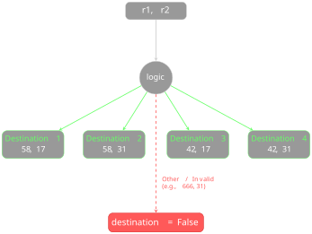
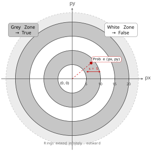

Python Basics - Challenges#
We now propose some exercises without solutions.
Try executing them both in Jupyter and a text editor such as Spyder or Visual Studio Code to get familiar with both environments.
Challenge - which booleans 1?#
✪ Find the row with values such that the final print prints True. Is there only one combination or many?
[3]:
x = False; y = False
#x = False; y = True
#x = True; y = False
#x = True; y = True
print(x and y)
False
Challenge - which booleans 2?#
✪ Find the row in which by assigning values to x and y it prints True. Is there only one combinatin or many?
[ ]:
x = False; y = False; z = False
#x = False; y = True; z = False
#x = True; y = False; z = False
#x = True; y = True; z = False
#x = False; y = False; z = True
#x = False; y = True; z = True
#x = True; y = False; z = True
#x = True; y =True; z =True
print((x or y) and (not x and z))
True
Challenge - airport#
✪✪ You finally decide to take a vacation and go to the airport, expecting to spend some time in several queues. Luckily, you only have carry-on bag, so you directly go to security checks, where you can choose among three rows of people sec1, sec2, sec3. Each person an average takes 4 minutes to be examinated, you included, and obviously you choose the shortest queue. Afterwards you go to the gate, where you find two queues of ga1 and ga2 people, and you know that each
person you included an average takes 20 seconds to pass: again you choose the shortes queue. Luckily the aircraft is next to the gate so you can directly choose whether to board at the queue at the head of the aircraft with bo1 people or at the queue at the tail of the plane with bo2 people. Each passenger you included takes an average 30 seconds, and you choose the shortest queue.
Write some code to calculate how much time you take in total to enter the plane, showing it in minutes and seconds.
Example - given:
sec1,sec2,sec3, ga1,ga2, bo1,bo2 = 4,5,8, 5,2, 7,6
your code must print:
24 minutes and 30 seconds
[ ]:
sec1,sec2,sec3, ga1,ga2, bo1,bo2 = 4,5,8, 5,2, 7,6 # 24 minutes and 30 seconds
#sec1,sec2,sec3, ga1,ga2, bo1,bo2 = 9,7,1, 3,5, 2,9 # 10 minutes and 50 seconds
# write here
Challenge - Holiday trip#
✪✪ While an holiday you are traveling by car, and in a particular day you want to visit one among 4 destinations. Each location requires to go through two roads r1 and r2. Roads are numbered with two digits numbers, for example to reach destination 1 you need to go to road 58 and road 17.
Write some code that given r1 and r2 roads shows the number of the destination.
If the car goes to a road it shouldn’t (i.e. road 666), put
FalseindestinationDO NOT use summations
IMPORTANT: DO NOT use
ifcommands (it’s possible, think about it ;-)

Example 1 - given:
r1,r2 = 58,31
After your code it must print:
The destination is 2
Example 2 - given:
r1,r2 = 666,31
After your code it must print:
The destination is False
[1]:
r1,r2 = 58,17 # 1
r1,r2 = 58,31 # 2
r1,r2 = 42,17 # 3
r1,r2 = 42,31 # 4
r1,r2 = 666,31 # False
r1,r2 = 58,666 # False
r1,r2 = 32,999 # False
# write here
Challange - The Tunnel of Time#
Recently a spatio-temporal tunnel has been discovered which allows time travellling. To repair the tragic errors made in the past, humanity is struggling to send probes through the tunnel. Alas, the tunnel is perturbed by very strong magnetic-gravitational fields which might have sucked the probe into the folds of time (represented in shades of grey).
Write some code which given the px,py position of the probe, prints True if the probe went into a grey zone, and False if it went into a white zone.
Origin 0,0 is at the center
Each circle edge has
s=5distance from its inner circleedges are supposed to be infinitesimal and we assume the probe will never go exactly there - in such cases, your program behavious is allowed to be undefined
DO NOT use
ifinstruction nor cyclesNOTE the time tunnel is potentially infinite, so your code must also work for very big values of
px,py

[6]:
s=5
px,py = 0,0 # True
#px,py = 2,0 # True
#px,py = 0,7 # False
#px,py = 3,3 # True
#px,py = 4,4 # False
#px,py = 6,7 # False
#px,py = 7,8 # True
#px,py = 15,9 # False
#px,py = 230,120 # False
#px,py = 1230,536 # True
# write here